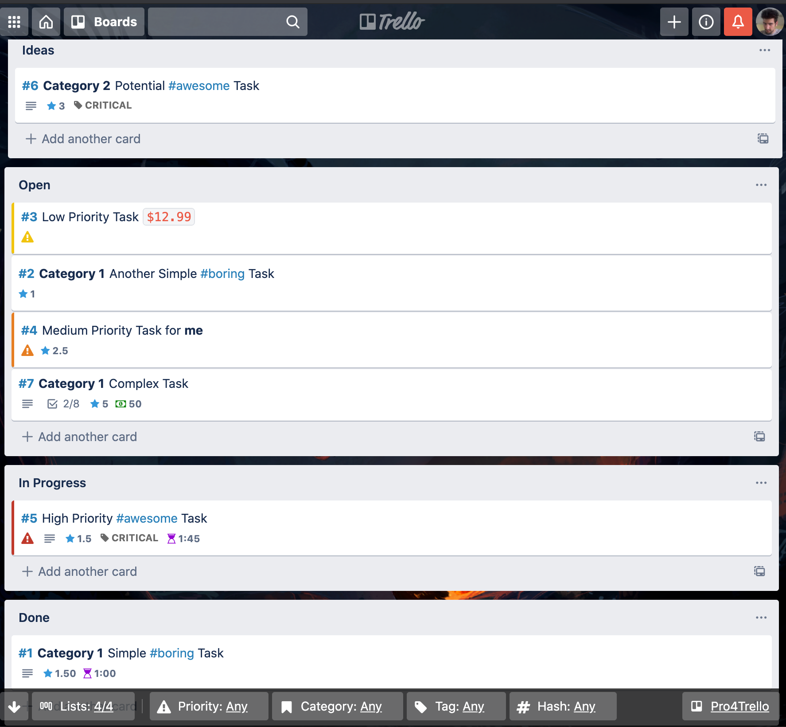
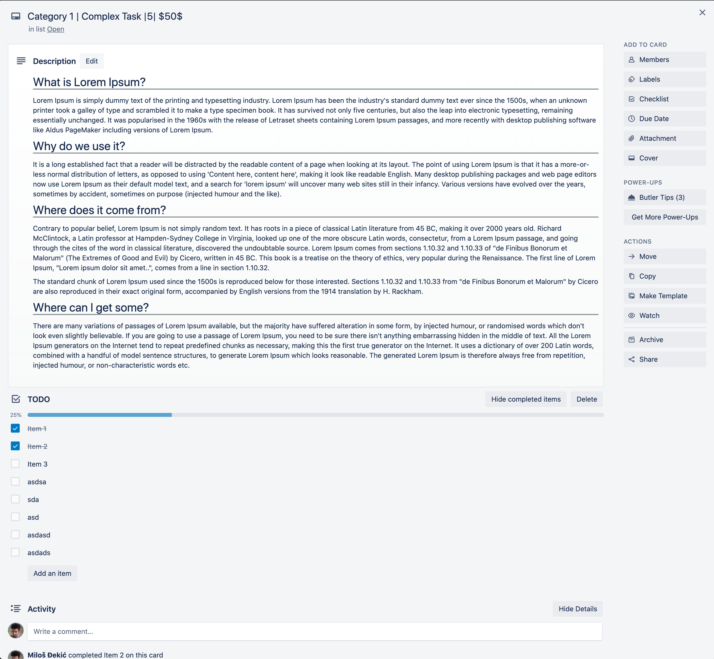
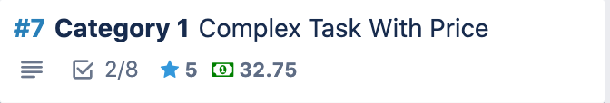

New stuff for sure! Stay home, stay safe #corona.
You can now toggle between horizontal and vertical distribution of lists. Yeah, it's unbelieveable!

Look for the arrow in your bottom left corner, next to the "Lists" control. Now play with it!
What!? Yes!

You can use this setting just like any other - for specific boards or globally.
Go to your board settings and turn it on like right now! Unreal...
So you can now also put prices on cards, not just time and points:

Turn it on in your board or global settings and use the following format: $32.75$ - easy!
This was a kind contribution to Pro4Trello by abeimler.
You can now support the author on Patreon!
Make a difference today! Keep Pro4Trello awesome and FREE!
Thank you for your patience!
2.1 Hide Activity entries removed (didn't work + Trello introduced it themselves)
2.2 Hashtags can contain numbers now
2.3 Pro4Trello will now properly load in the back even when a card is opened directly